Córtex Estudos · 4º Semestre · Anatomia Topográfica · Aula 04
Mama
Localização, quadrantes, arquitetura em camadas, ligamentos de Cooper, embriologia da crista mamária, irrigação, drenagem venosa e — o mais importante — a drenagem linfática que decide o destino do tumor de mama. A aula inteira explicada do zero, com as pontes clínicas que o professor fez.
1 · Desenvolvimento: do rudimento à lactação
- A mama é característica da classe dos mamíferos e existe nos dois sexos: no homem, rudimentar (quando o homem forma tecido glandular mamário, chama-se GINECOMASTIA).
- Na infância (menino e menina), há apenas um rudimento de tecido ectodérmico na altura do 4º espaço intercostal de cada lado.
- Puberdade: o ESTRÓGENO ovariano dispara o desenvolvimento do tecido glandular (há 5 estágios de desenvolvimento — vocês verão na ginecologia).
- 🎯 Desenvolvimento MÁXIMO: nos 2 últimos meses de GRAVIDEZ até a lactação — quando o tecido glandular precisa estar totalmente formado para produzir leite. Após ~6 meses de amamentação a produção cai e o tecido regride — mas a mama normalmente fica maior que antes da gestação.
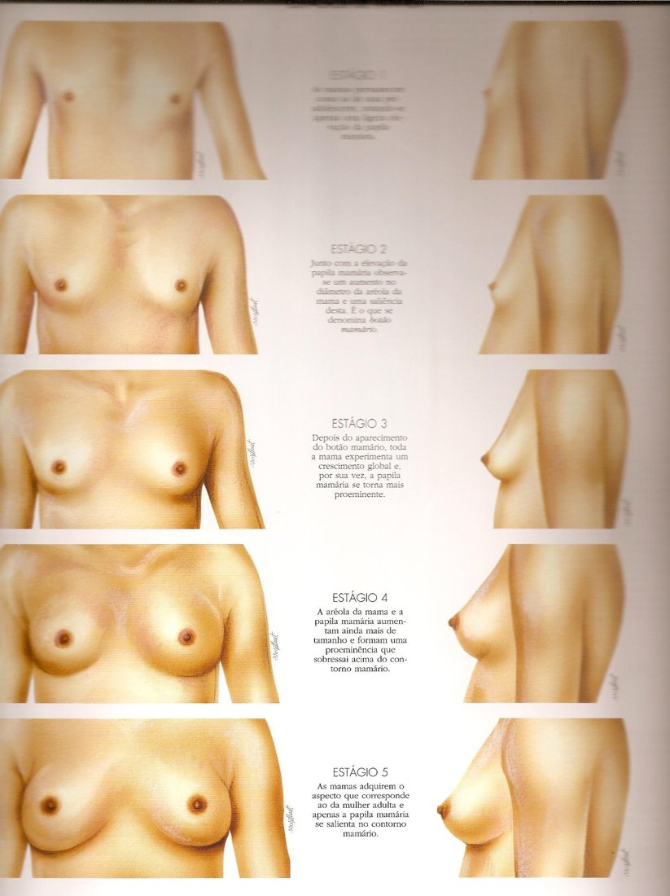
2 · Forma e localização: os números de prova
O endereço da mama
- 1Entre a 2ª e a 6ª COSTELA — eminência arredondada na face anterior do tórax.
- 2LATERAL à margem lateral do ESTERNO — nunca há corpo mamário SOBRE o esterno; o espaço entre as mamas é o SEIO MAMÁRIO.
- 3Prolonga-se até a linha axilar anterior ou MÉDIA — linha axilar ANTERIOR = borda lateral do peitoral maior; POSTERIOR = borda lateral do latíssimo do dorso; a MÉDIA fica entre as duas. O tecido pode entrar na axila (processo axilar) — por isso a palpação axilar é obrigatória.
- 4Mamilo: ± no centro, na altura da 4ª COSTELA (ou 4º EIC) — papilas em alturas ligeiramente diferentes entre os lados = NORMAL.
🎯 "Seio" não é a mama
A população chama a mama de "seio" — mas anatomicamente o SEIO MAMÁRIO é o ESPAÇO ENTRE as duas mamas (sobre o esterno). E embaixo da mama fica o SULCO SUBMAMÁRIO — tão mais acentuado quanto maior/mais baixa a mama (e após a lactação): no exame físico, levante a mama e examine o sulco (infecção, alergia de sutiã).
- Forma: esférica, cônica, piriforme (de pera) ou achatada — varia com grupo étnico, tipo morfológico constitucional (longilínea → menor; brevilínea → maior; mediolínea intermediária), idade e obesidade. Descreva o tipo no exame físico.
- Estatisticamente, a mama direita costuma ser um pouco maior e mais baixa — dado estatístico, não regra.
- Na idosa, a mama "desaba": não é só a pele — são os ligamentos suspensores (tecido conjuntivo) afrouxando.
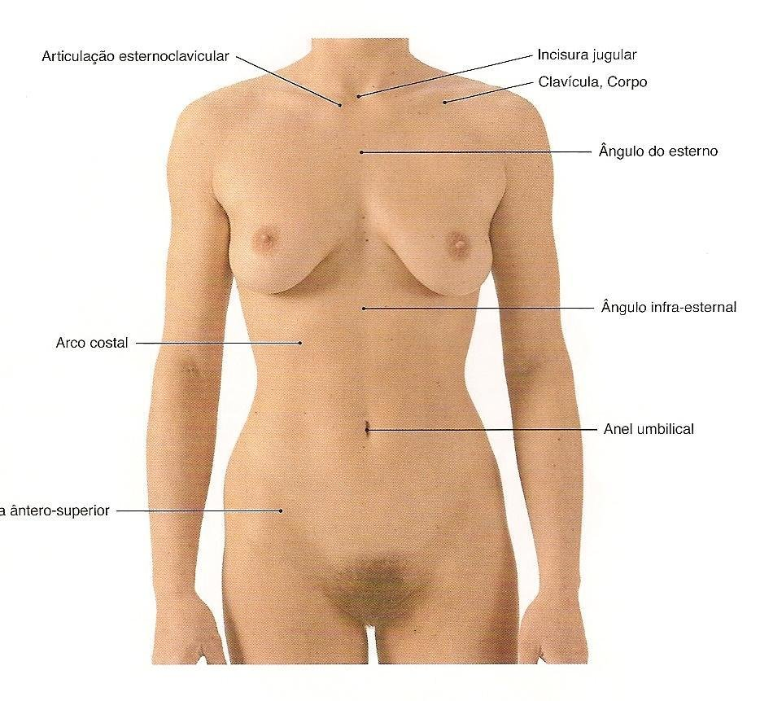
3 · Quadrantes — e onde moram os tumores
- Trace uma linha vertical e uma horizontal sobre a PAPILA: quadrantes SUPEROLATERAL, SUPEROMEDIAL, INFEROLATERAL e INFEROMEDIAL. (Descrever por "horas de relógio" também é aceito — o padrão é o quadrante.)
🎯 Superolateral: o quadrante que concentra tudo
A maior concentração de tecido GLANDULAR está no quadrante SUPEROLATERAL (que ainda ganha o processo axilar). Mais tecido glandular = maior chance de tumoração: os tumores de mama são mais frequentes no quadrante superolateral. E o detalhe do volume: quem dá o volume da mama é o tecido GORDUROSO — exceto na lactação, quando o glandular cresce mais.
🩺 Por que descrever por quadrante
"Tumoração indurada, fixa, no quadrante inferolateral da mama direita" — essa descrição no pedido de mamografia/ultrassom faz o radiologista se fixar na região certa. E estimule o autoexame: ninguém conhece o próprio corpo melhor que a paciente.
4 · Nomenclatura: papila, aréola, lobos e seios lactíferos
- PAPILA mamária (mamilo): projeção cilíndrica no centro da aréola, na altura da 4ª costela, perfurada por 15–20 DUCTOS LACTÍFEROS.
- SEIOS LACTÍFEROS 🎯: dilatações nas extremidades dos ductos, antes de desembocarem na papila — facilitam o fluxo do leite na sucção.
- ARÉOLA: pele mais escura ao redor da papila; glândulas areolares (sebáceas) podem formar relevos — os tubérculos — que aumentam na gravidez (sem exteriorizar secreção).
- Corpo da mama = onde vive o tecido glandular (a "parte nobre"), organizado em LOBOS → LÓBULOS → ductos lactíferos; o prolongamento axilar do tecido = processo lateral (axilar).
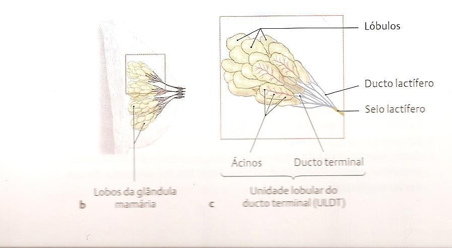
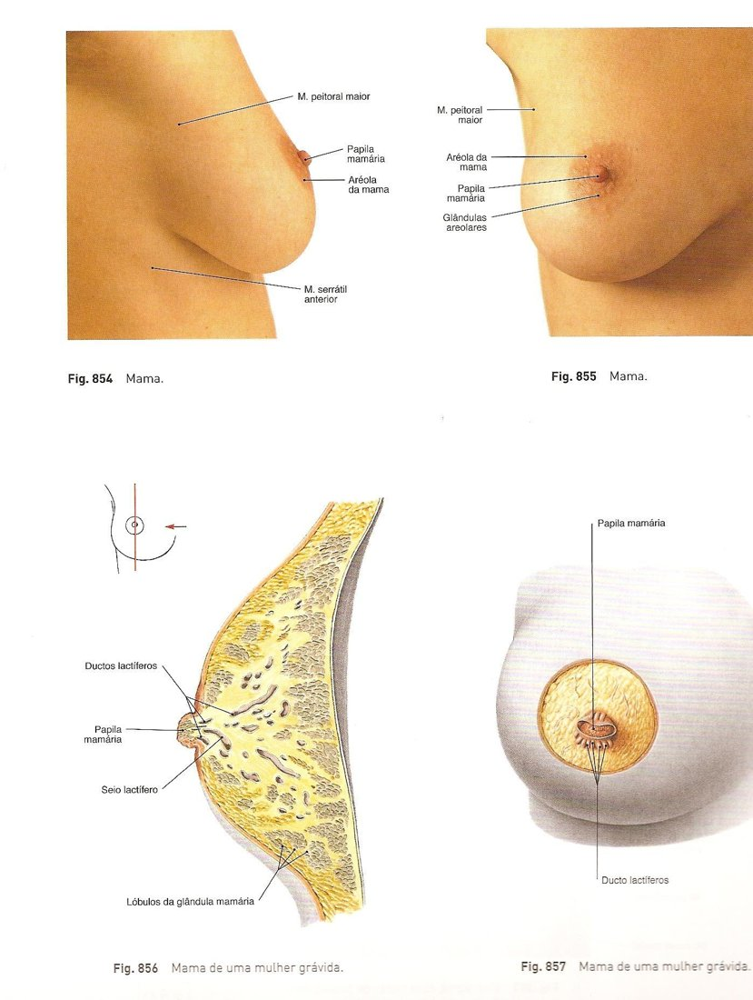
5 · Relações topográficas e a "mama fixa"
- A mama está assentada sobre o M. PEITORAL MAIOR (sobre a fáscia dele); relaciona-se lateralmente com o SERRÁTIL ANTERIOR e, inferiormente, com a aponeurose do OBLÍQUO EXTERNO.
- A mama normal tem mobilidade (látero-lateral e súpero-inferior) sobre a fáscia.
⚠️ Mama fixa × tumor infiltrativo
Raramente o tecido mamário perfura a fáscia do peitoral maior e a mama fica RÍGIDA E FIXA — perde a mobilidade. Isso confunde com tumor: os tumores malignos são infiltrativos, invadem a fáscia (e o músculo), fixam a mama e retraem a pele. Diferença que pode exigir biópsia.
6 · Arquitetura em camadas: Camper, Scarpa e o tecido glandular
O corte sagital, da pele ao músculo
- 1Epiderme e derme — a pele.
- 2CAMADA AREOLAR — gordura amarela, "redondinha", mais superficial (epônimo: fáscia de CAMPER).
- 3FÁSCIA SUPERFICIAL — tecido conjuntivo entremeado entre (e dentro) das camadas de gordura — é ela que forma os ligamentos suspensores. Quanto maior a tela subcutânea, mais móvel a pele.
- 4CAMADA LAMELAR — gordura esbranquiçada, em lamelas (epônimo: fáscia de SCARPA). 🎯 É NA CAMADA LAMELAR QUE ESTÁ O TECIDO GLANDULAR — róseo na peça ("cortou a mama no sagital: o tecido rosado é o glandular; a areolar é amarela, a lamelar é branca").
- 5Fáscia do peitoral maior → músculo — a mama se assenta sobre eles, mas eles NÃO fazem parte da arquitetura da mama (mama = epiderme, derme, camada gordurosa e camada glandular).
🔗 Extrapolando as camadas
O mesmo esquema areolar/fáscia/lamelar vale para a parede abdominal e a raiz da coxa; no dorso, pode faltar a lamelar. Camper e Scarpa voltarão muitas vezes na topográfica.
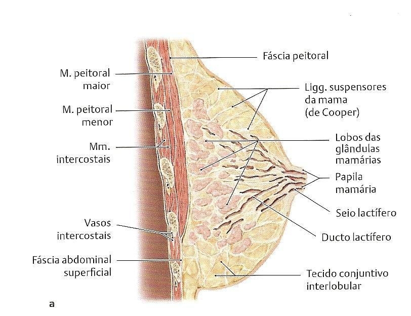
7 · Ligamentos suspensores (Cooper) e a ptose
🎯 Quem segura a mama — e por que ela cai
As fáscias da tela subcutânea que envolvem a camada areolar, a lamelar e a própria glândula emitem septos, unem-se e se prendem na CLAVÍCULA: são os LIGAMENTOS SUSPENSORES DA MAMA (de Cooper). Com os anos, esse tecido conjuntivo afrouxa → a mama "desaba" (ptose). Não há como reconstruir ligamento: a plástica apenas coloca o silicone (hoje, geralmente abaixo da fáscia do peitoral) para projetar — os ligamentos ficam como estão.
8 · Aréola, músculo mamilo-areolar e telotismo
- Sob a aréola há pouca gordura: o tecido vira fibroso + fibras musculares LISAS — o M. MAMILO-AREOLAR, a "musculatura sexual", com fibras circulares e longitudinais.
- Inervação AUTÔNOMA: a contração projeta a papila; o relaxamento a deixa no nível da aréola ou invertida. 🎯 No FRIO, a contração deixa o mamilo túrgido/projetado = TELOTISMO.
- Variações normais: papila protrusa, plana ou invertida. Na gestação com papila não projetada, estimular a protrusão para a sucção adequada (nas primeiras horas o bebê pode não pegar — risco de hipoglicemia neonatal se ficar muitas horas sem mamar).
- Cor: aréola mais rosada na nulípara; escurece a partir do 2º mês de gestação (papila também) — sempre mais escura que a pele, modulada pelo grupo étnico. Papila e aréola crescem na gestação e regridem.
9 · Embriologia: a crista mamária e as anomalias
- Embrião de 6 SEMANAS: espessamento ECTODÉRMICO (5–6 camadas) forma o CORDÃO MAMÁRIO — também chamado CRISTA MAMÁRIA ou cordão lácteo — que vai da AXILA à PREGA INGUINAL, dos dois lados.
- A crista INVOLUI, permanecendo apenas no 4º EIC — as futuras mamas. Mas o ectoderma guarda a potencialidade: pode formar papila, aréola ou mama inteira em qualquer ponto do trajeto (pense no cachorro e no gato, com várias mamas ao longo da crista).
O vocabulário das anomalias (adora cair em prova)
- 1POLITELIA — papila + aréola extranumerárias (além das duas normais).
- 2POLIMASTIA — mama COMPLETA a mais — o local clássico é a AXILA (onde sobra mais tecido da crista).
- 3AMASTIA — ausência total da mama (resta mancha escura no local do mamilo).
- 4ATELIA — falta da papila (e aréola).
- 5MICRO/MACROMASTIA — alterações de volume (uma mama pode crescer e a outra não).
- 6Mamilos ECTÓPICOS — fora da crista mamária — raridade pela potencialidade do ectoderma.
🩺 O caso do consultório: "caroço na axila que piora na menstruação"
Moça com tumoração axilar que piorava no período menstrual — por quê? Ação hormonal sobre tecido GLANDULAR. Ressecada: era tecido glandular mamário extranumerário (mama acessória da crista), não linfonodo nem tumor. A crista mamária explica.
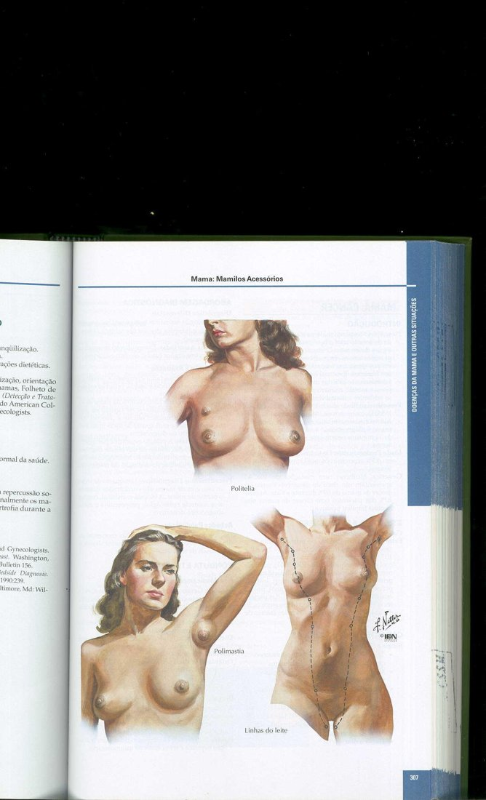
10 · Irrigação arterial
Regra do professor: "a irrigação da mama é praticamente a da parede torácica". Quatro fontes:
De onde vem o sangue
- 1A. TORÁCICA INTERNA (mamária interna) — ramo da SUBCLÁVIA, desce ao lado do esterno e origina as intercostais ANTERIORES do 2º ao 6º EIC — ramos finos que se avolumam na lactação; chegam à mama por ramos perfurantes (atravessam a musculatura). 🔗 É a "mamária" que a cirurgia cardíaca usa na ponte de coronária.
- 2A. TORÁCICA LATERAL — da AXILAR, desce pela margem LATERAL do peitoral menor (sintopia com o n. torácico longo) → ramos mamários LATERAIS.
- 3A. TORÁCICA SUPERIOR — da AXILAR, pela margem MEDIAL do peitoral menor → ramos mamários MEDIAIS.
- 4AA. INTERCOSTAIS POSTERIORES — ramos diretos da AORTA torácica, emitem ramos mamários que também aumentam na lactação.
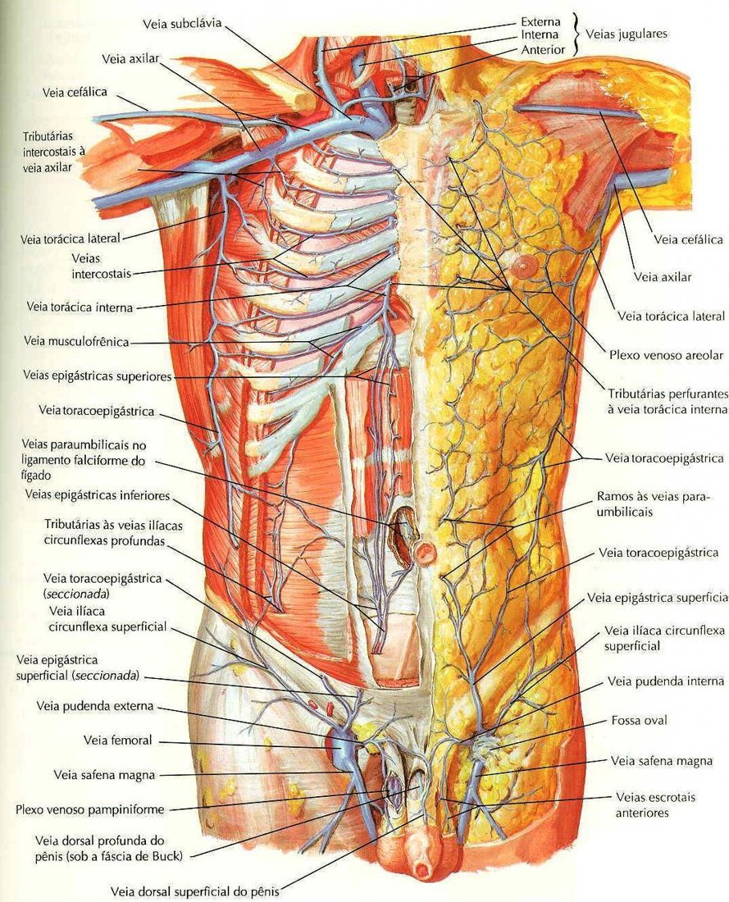
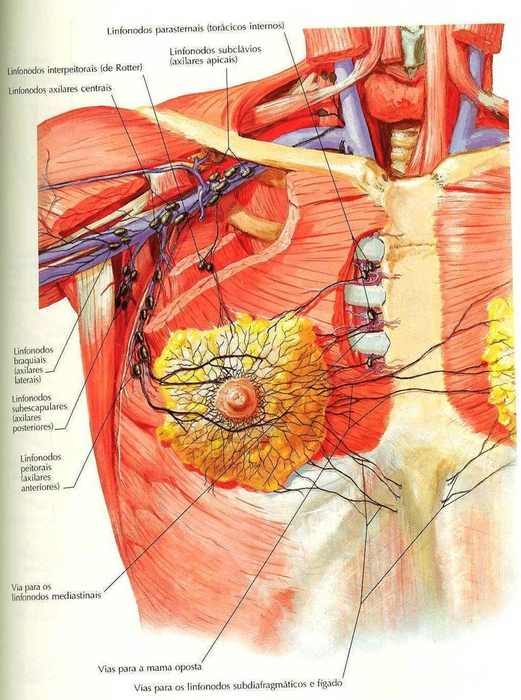
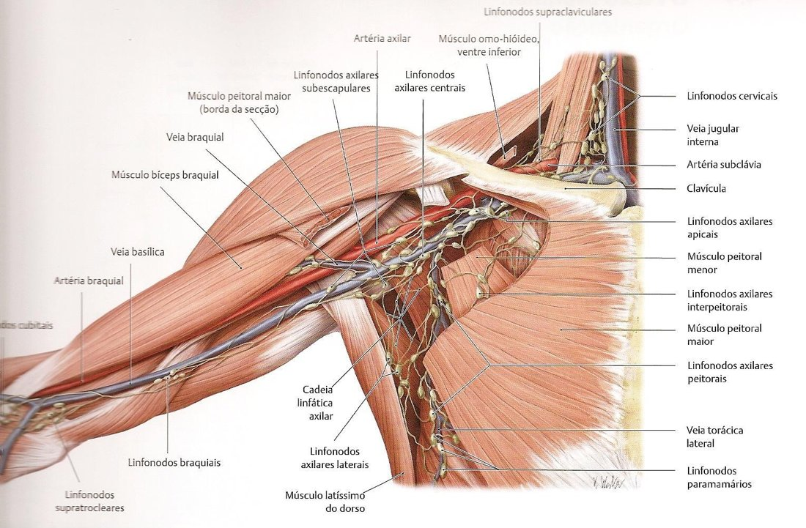
11 · Drenagem venosa (e a toracoepigástrica)
- As veias acompanham as artérias; a diferença é a desembocadura: v. torácica interna ESQUERDA → v. braquiocefálica; DIREITA → mais frequentemente na VCS. As vv. torácicas (laterais) → vv. axilares.
- Intercostais: as ANTERIORES drenam para a torácica interna; as POSTERIORES → sistema ÁZIGO 🎯: à direita, direto para a ázigo; à esquerda, hemiázigo (abaixo do 5º EIC) ou hemiázigo acessório (acima) — tudo desembocando na ázigo → VCS.
🎯 A veia TORACOEPIGÁSTRICA — a colateral que salva
Veia SUPERFICIAL (no subcutâneo, acima das fáscias): drena a pele da parte lateral da mama e desemboca na AXILAR; embaixo, suas tributárias anastomosam com a epigástrica superficial (→ safena magna → femoral → cava INFERIOR). Ou seja, ela liga o território da cava superior ao da cava inferior pela parede: na trombose de cava, vira via de circulação colateral visível — o fluxo desce ou sobe conforme onde está a obstrução. "Veia importante de ser vista na prática."
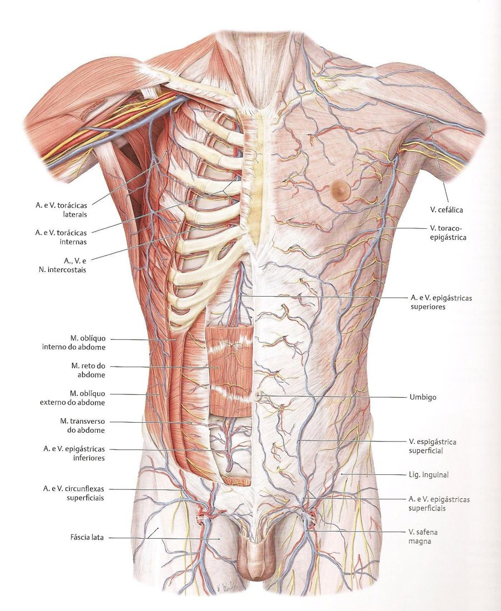
12 · Drenagem LINFÁTICA: o mapa do tumor
🎯 "É o mais importante — é por onde disseminam as células tumorais"
Origem: plexos no tecido conjuntivo interlobular e nas paredes dos ductos lactíferos — os dois se comunicam com o PLEXO SUBAREOLAR (drena aréola e mamilo). Daí os vasos eferentes seguem: ~75% para os linfonodos AXILARES (principalmente dos quadrantes LATERAIS); o restante (~25%) perfura a fáscia do peitoral maior para os linfonodos PARAESTERNAIS (torácicos internos) — rota dos quadrantes MEDIAIS — e para os intercostais, que se comunicam com os MEDIASTINAIS. Atenção: o fluxo não é 100% garantido — lateral pode drenar medial e vice-versa.
⚠️ A consequência cirúrgica que ele desenhou
Tumor no quadrante superoMEDIAL → drena aos paraesternais → mediastinais → a doença entra na cavidade torácica: linfonodos mediastinais não se esvaziam cirurgicamente — resta quimio/radioterapia, e a sobrevida é menor. Já o acometimento axilar permite o ESVAZIAMENTO AXILAR (retirada dos linfonodos comprometidos). A topografia do quadrante muda o prognóstico.
- Grupamentos AXILARES 🎯: peitoral (anterior) · subescapular (posterior) · central (meio da axila) · apical (sobre a v. axilar/subclávia) · infraclavicular.
- Destino final: lado direito → ducto linfático direito; esquerdo → ducto TORÁCICO — ambos desembocando na região da subclávia/jugular (ângulo venoso).
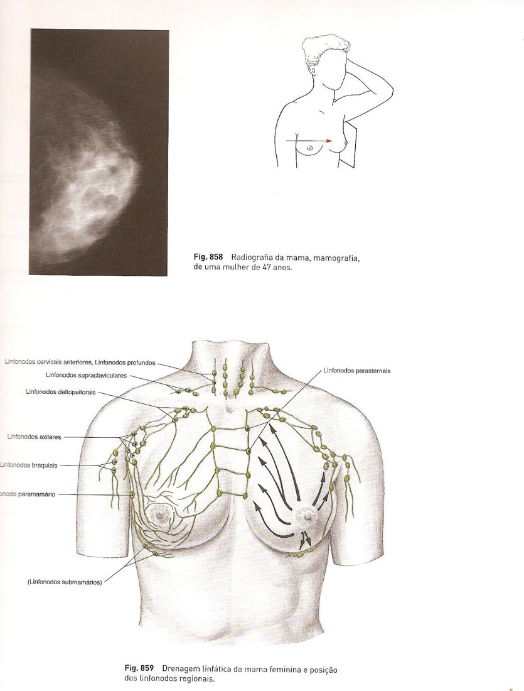
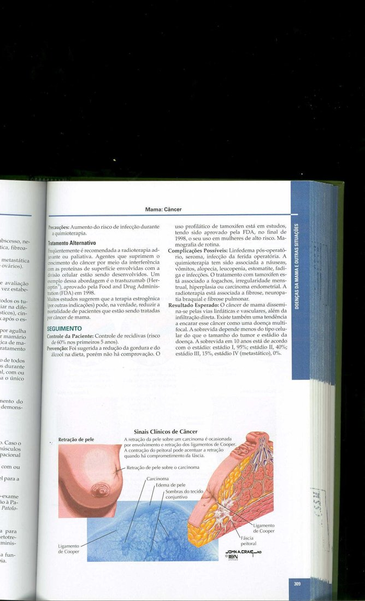
13 · Inervação
- NN. INTERCOSTAIS do 2º ao 6º EIC (acompanham os vasos) + ramos ventrais CUTÂNEOS anteriores — sensibilidade da pele, epiderme/derme e tela subcutânea.
- Lembre: a musculatura mamilo-areolar tem inervação autônoma (telotismo).
14 · Clínica: mastite, cistos, mamografia
- 🎯 MASTITE aguda: criança não mamou, leite não foi retirado → "leite empedrado" → processo inflamatório/infeccioso: pele vermelha, quente, endurecida. Tratamento: anti-inflamatório + antibiótico; drenar SÓ se houver abscesso (coleção de pus — que, não drenado, pode fistulizar). Por isso o esvaziamento (bombinhas) importa quando o bebê não suga.
- Cistos de gordura na camada areolar: aspirados/comprimidos; podem recidivar.
- Tumores: dos benignos pequenos aos que exigem ressecção + análise de malignidade; tumor infiltrativo fixa a mama e retrai a pele — biópsia decide.
- Mamografia: radiopacidade aumentada com concentração de CÁLCIO → pensar em tumoração.
- Estética: silicone (subfascial do peitoral) e preenchimento com gordura autóloga no corpo da mama — nenhum dos dois reconstrói os ligamentos.
✅ Resumo rápido da aula
- Localização: 2ª–6ª costela · lateral ao esterno (seio mamário = ESPAÇO entre as mamas) · até linha axilar anterior/média · mamilo na 4ª costela/4º EIC · sulco submamário embaixo.
- Quadrantes (linhas sobre a papila): tumores mais frequentes no SUPEROLATERAL (mais tecido glandular + processo axilar). Volume da mama = GORDURA (exceto lactação).
- Camadas: epiderme → derme → areolar (Camper, amarela) → fáscia superficial → lamelar (Scarpa, branca) = onde está o TECIDO GLANDULAR (róseo) → fáscia do peitoral maior (fora da arquitetura da mama).
- Cooper: fáscias → septos → clavícula; afrouxam com a idade → ptose (plástica não reconstrói ligamento).
- Papila: 15–20 ductos lactíferos; seios lactíferos = dilatações; m. mamilo-areolar (liso, autônomo) → TELOTISMO no frio; aréola escurece do 2º mês de gestação; tubérculos areolares.
- Embriologia: 6ª semana, crista mamária (ectoderma) da axila à prega inguinal; involui exceto 4º EIC. Politelia (papila extra) · polimastia (mama extra — axila!) · amastia · atelia · micro/macromastia.
- Irrigação: torácica interna (subclávia; intercostais anteriores 2º–6º; perfurantes; a "mamária" da ponte) · torácica lateral (axilar, lateral ao peitoral menor) · torácica superior (axilar, medial) · intercostais posteriores (aorta).
- Veias: acompanham; torácica interna E→braquiocefálica, D→VCS; posteriores → ázigo/hemiázigo; TORACOEPIGÁSTRICA superficial → axilar + anastomose com epigástrica superficial = colateral cava sup ↔ inf (trombose de cava).
- LINFÁTICA (o mais importante): plexos interlobular + ductos → subareolar → 75% AXILARES (laterais); mediais → paraesternais → mediastinais (sem esvaziamento, pior prognóstico). Grupos axilares: peitoral, subescapular, central, apical, infraclavicular. Direita → ducto linfático direito; esquerda → ducto torácico.
- Inervação: intercostais 2º–6º + ramos cutâneos anteriores.
- Clínica: mastite (leite empedrado; ATB + anti-inflamatório; drenar só abscesso) · mama fixa × tumor infiltrativo (pele retraída) · mamografia (cálcio) · ginecomastia.
🗺️ Resumão Pré-Prova — Mama
Revisão da véspera · Anatomia Topográfica · Aula 04 · só o que foi enfatizado
- 2ª–6ª costela · lateral à margem lateral do esterno (nunca sobre ele) · até linha axilar anterior ou MÉDIA.
- Mamilo: 4ª costela / 4º EIC (alturas diferentes entre os lados = normal).
- Linhas axilares: ANTERIOR = borda lateral do peitoral maior · POSTERIOR = borda lateral do latíssimo · MÉDIA no meio.
- SEIO MAMÁRIO = espaço ENTRE as mamas (não é "a mama"!) · sulco submamário embaixo (examinar: infecção/alergia).
- Forma: esférica/cônica/piriforme/achatada — étnico, constitucional (longilínea menor, brevilínea maior), idade. Direita costuma ser maior e mais baixa (estatística).
- Relações: assentada no PEITORAL MAIOR; serrátil anterior (lateral); aponeurose do oblíquo externo (inferior). Mobilidade normal; fáscia perfurada = mama FIXA.
- Linhas vertical + horizontal SOBRE A PAPILA → superolateral · superomedial · inferolateral · inferomedial.
- SUPEROLATERAL: maior concentração de tecido GLANDULAR + processo axilar → tumores mais frequentes.
- Volume da mama = tecido GORDUROSO — exceto na LACTAÇÃO (glandular cresce mais).
- Exame físico: descrever tumoração POR QUADRANTE (orienta o radiologista) + palpar AXILA (processo axilar + linfonodos) + estimular autoexame.
| Camada | Característica | Epônimo |
|---|---|---|
| Epiderme + derme | pele | — |
| AREOLAR | gordura AMARELA, redondinha, superficial | Camper |
| Fáscia superficial | conjuntivo entremeado → forma os ligamentos suspensores | — |
| LAMELAR | gordura BRANCA em lamelas · AQUI está o tecido GLANDULAR (róseo) | Scarpa |
| Fáscia do peitoral + músculo | base de assentamento — NÃO é arquitetura da mama | — |
- Papila: projeção cilíndrica no 4º EIC, perfurada por 15–20 DUCTOS LACTÍFEROS; SEIOS LACTÍFEROS = dilatações das extremidades (facilitam o fluxo do leite).
- Aréola: mais escura que a pele; ROSADA na nulípara; escurece do 2º mês de gestação; glândulas areolares (sebáceas) → tubérculos na gravidez (sem exteriorizar secreção).
- M. mamilo-areolar: músculo LISO ("musculatura sexual"), fibras circulares + longitudinais, inervação AUTÔNOMA. Contração projeta a papila; frio → mamilo túrgido = TELOTISMO.
- Papila protrusa/plana/invertida = variação; na gestação, estimular protrusão p/ sucção.
- Organização: LOBOS → LÓBULOS → ductos lactíferos → seios → papila. Parte nobre = tecido glandular (camada lamelar).
- 6ª semana: espessamento ECTODÉRMICO = CRISTA MAMÁRIA (cordão mamário/lácteo), da AXILA à PREGA INGUINAL; involui, restando o 4º EIC.
- POLITELIA = papila+aréola EXTRA · POLIMASTIA = MAMA completa extra (clássico: AXILA) · AMASTIA = ausência total · ATELIA = sem papila · micro/macromastia · mamilos ectópicos (fora da crista — raríssimo).
- Desenvolvimento: rudimento (4º EIC) → puberdade/ESTRÓGENO → máximo nos 2 últimos meses de gestação; regride pós-lactação (fica maior que antes). Homem com tecido glandular = GINECOMASTIA.
| Artéria | Origem | Território |
|---|---|---|
| Torácica INTERNA ("mamária" da ponte de coronária) | SUBCLÁVIA | intercostais ANTERIORES 2º–6º EIC → ramos perfurantes mediais (avolumam na lactação) |
| Torácica LATERAL | AXILAR (margem LATERAL do peitoral menor) | ramos mamários LATERAIS |
| Torácica SUPERIOR | AXILAR (margem MEDIAL do peitoral menor) | ramos mamários MEDIAIS |
| Intercostais POSTERIORES | AORTA torácica (diretos) | ramos mamários posteriores |
- Acompanham as artérias. Torácica interna: ESQUERDA → braquiocefálica · DIREITA → VCS. Torácicas (laterais) → axilares.
- Intercostais posteriores → sistema ÁZIGO: direita → ázigo; esquerda → hemiázigo (abaixo do 5º EIC) / hemiázigo acessório (acima) → ázigo → VCS.
- TORACOEPIGÁSTRICA: SUPERFICIAL (subcutâneo), drena pele lateral da mama → AXILAR; anastomosa com epigástrica superficial (→ safena magna → cava INFERIOR) = ponte cava sup ↔ inf → circulação colateral na trombose de cava.
- Origem: plexos INTERLOBULAR + paredes dos DUCTOS lactíferos → plexo SUBAREOLAR (drena aréola/mamilo).
- ~75% → linfonodos AXILARES (quadrantes LATERAIS) · ~25%: paraesternais/torácicos internos (quadrantes MEDIAIS, perfurando a fáscia do peitoral) + intercostais → MEDIASTINAIS. Fluxo NÃO é 100% garantido.
- Grupos axilares: peitoral (anterior) · subescapular (posterior) · central · apical (sobre a v. axilar) · infraclavicular.
- Destino final: direita → ducto linfático direito · esquerda → ducto TORÁCICO (ângulo venoso subclávia/jugular).
- Inervação: nn. INTERCOSTAIS 2º–6º EIC + ramos ventrais cutâneos anteriores (pele/tela subcutânea).
- MASTITE aguda: leite não retirado → "empedrado" → pele vermelha, quente, endurecida. TTO: anti-inflamatório + ANTIBIÓTICO; drenar SÓ se abscesso (não drenado → fístula).
- Mama fixa × tumor: glandular perfurando a fáscia = fixa (benigno) × tumor INFILTRATIVO fixa E RETRAI A PELE → biópsia.
- Cistos de gordura (camada areolar): aspirados, recidivam · Mamografia: radiopacidade + CÁLCIO → pensar tumor.
- "Caroço na axila que piora na menstruação" → tecido glandular ectópico (polimastia/crista mamária).
- "Tumor no quadrante superolateral" → o mais comum (mais tecido glandular) → drena p/ AXILA.
- "Tumor no quadrante superomedial" → paraesternais → mediastinais → pior prognóstico.
- "Mamilo túrgido no frio" → telotismo (m. mamilo-areolar, autônomo).
- "Mama caída na idosa" → ligamentos de Cooper frouxos.
- "Veia visível da axila ao abdome em trombose de cava" → toracoepigástrica (colateral).
- "Ponte de safena... ou de MAMÁRIA" → a. torácica interna.
- "Puérpera com mama vermelha, quente, dura" → mastite (ATB + anti-inflamatório; drenar só abscesso).
- Seio mamário × mama: espaço ENTRE as mamas × o órgão (a população inverte).
- Politelia × polimastia: papila/aréola extra × MAMA COMPLETA extra.
- Amastia × atelia: sem mama × sem papila.
- Camada areolar × lamelar: amarela/Camper × branca/Scarpa — o GLANDULAR mora na LAMELAR.
- Ducto × seio lactífero: o canal × a DILATAÇÃO terminal (15–20 de cada).
- Torácica lateral × superior: lateral ao peitoral menor (ramos laterais) × medial (ramos mediais) — ambas da AXILAR.
- Torácica interna E × D (veias): braquiocefálica × VCS.
- Quadrante lateral × medial (linfa): axila/esvaziamento × paraesternal/mediastino (sem esvaziamento).
- Mama fixa × tumor infiltrativo: fáscia perfurada pelo glandular × invasão com retração de pele.
Banco de Questões — Mama
Anatomia Topográfica · Aula 04 · estilo ENADE/residência.